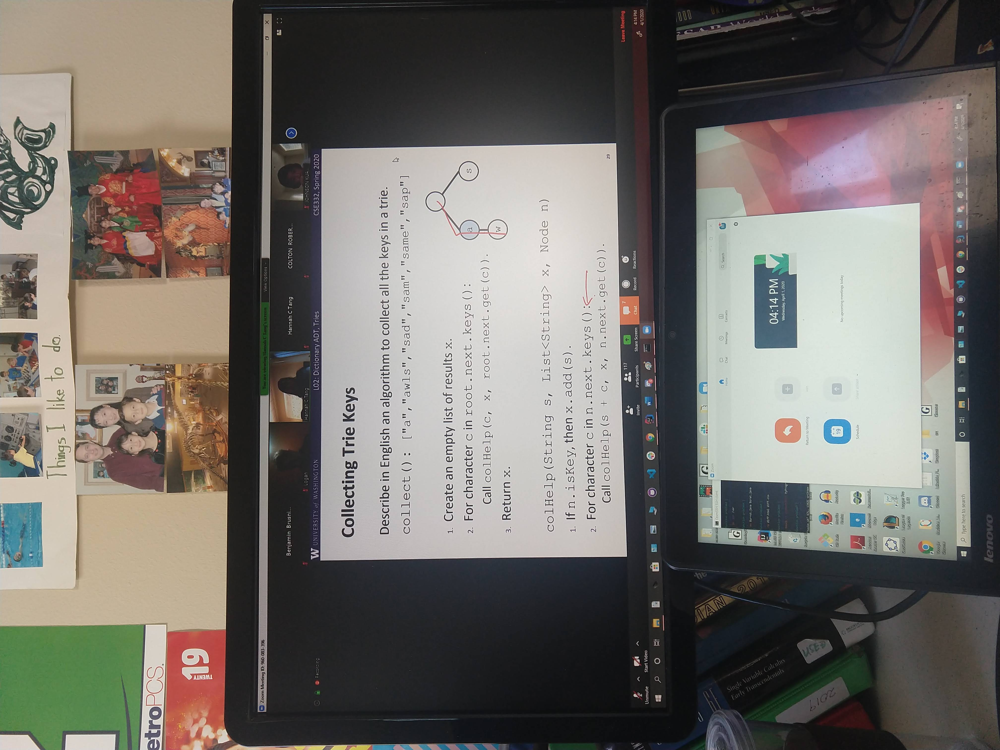
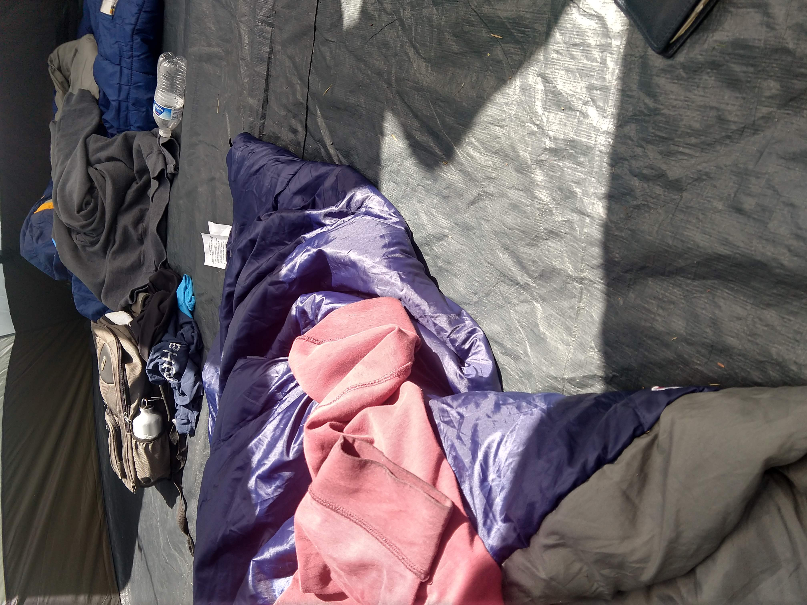
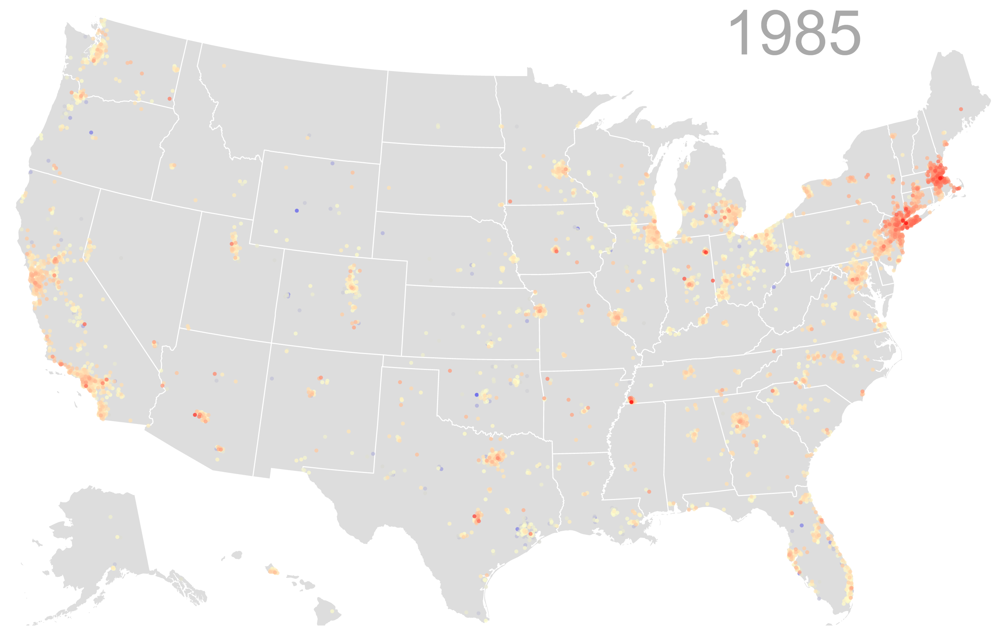

19AU
- Computer Programming 2 (CSE 143)
- Calculus III (Math 126)
- Travel Writing in Rome (Early Fall Start)
20WI
- Foundations of Computing 1 (CSE 311)
- Software Design and Implementation (CSE 331)
- Ways Of Feeling: Expressions Of Emotions Across Languages And Cultures (Honors 394)

20SP
- Matrix Algebra With Applications (Math 308)
- System and Software Tools (CSE 391)
- Data Structures and Parallelism (CSE 332)
- Foundations of Computing 2 (CSE 312)

21WI
- Introduction to Algorithms (CSE 421)
- Computational Biology (CSE 427)
- Russian Crime Fiction (Honors 241)
- Introduction to Psychology (Psych 101)
- Impact++ Software Developer (DECA)
- WILD Lab Research (STAKO)

20AU

20SU
- Web Programming (CSE 154)
- Introduction to Data Management (CSE 344)
- Introduction to Microeconomics (Econ 200)
- Intern at Ghost Pacer
- Juni Learning Instructor

21SP
- Systems Programming (CSE 333)
- Machine Learning (CSE 446)
- Truth and Power in the History of Education (Honors 232)
- WILD Lab Research (STAKO)
- Impact++ Project Manager (DECA)
21SU
- Software Engineer Intern (Oracle)
21AU
- Data Visualization (CSE 442)
- Storytelling in the Sciences (Honors 220)
- Data and Society (Soc 225)
- Impact++ Project Manager (Azure Open Source JavaScript SDK)
22SU
- Software Engineer Intern (Microsoft)
22SP
- Distributed Systems (CSE 452)
- Near/Middle East Illustrated (Honors 212)
- Persuasion Or Manipulation? The Ethics And Psychology Of Influence (Phil 118)
- CSE 154 (Web Programming) Teaching Assistant
- Impact++ Project Manager (Azure Open Source JavaScript SDK)
22WI
- Software Development Engineer Intern (Amazon)
- Impact++ Project Manager (Azure Open Source JavaScript SDK)
22AU
- Data Center Systems (CSE 453)
- American Sabor: Latinos and Latinas in US Popular Music (Honors 210)
- How to Write the History of the Aztecs (Honors 230)
23WI
- Introduction to Operating Systems (CSE 451)
- Database System Internals (CSE 444)
- Game Theory (Honors 221)
23SP
- Introduction to Computer Communication Networks (CSE 461)
- Modern Japan Through Cinema (Honors 212)
- Integration of Honors Core Curriculum (Honors 496)
- Food in Film (Nutr 390)
- Startup Seminar (CSE 492)
- CSE 154 (Web Programming) Teaching Assistant